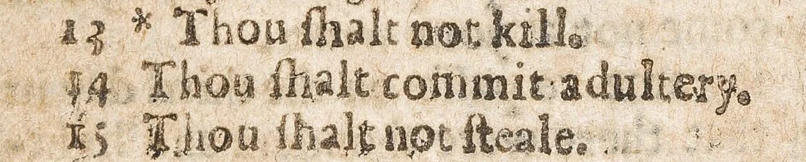

아직 펼치지 않은 카드
아직 펼치지 않은 카드
모두의 말로 찍은 성경 · 7사악한 성경1631년에 찍은 성경에서 단 한 낱말이 빠졌어요. 그 바람에 십계명 하나가 정반대 뜻이 되었어요. 어떤 낱말이었을까요?한 낱말을 빠뜨려서 큰일 난 성경이 있대!
1631년런던 · 왕의 인쇄인 로버트 바커와 마틴 루카스
사악한 성경
1631년 런던에서 찍은 성경의 출애굽기 20장 14절에서 not 세 글자가 빠졌어요. 위아래 줄에는 다 있는 낱말이에요. 법원은 책을 거둬 고치게 했고, 빠진 낱말은 주로 손으로 써 넣었어요. 그 not을 한 획씩 써 넣어 봐요.
성경에서 글자 세 개가 빠져서 큰일이 났대. 빠진 글자를 같이 써 넣어 볼까?
검수 전 시안이에요(기준서 2판). 책과 벌금, 고친 방법은 대학 도서관 목록과 성경 박물관의 연구자 인터뷰, 문구상 조합의 글을 따랐고, 서로 다른 곳은 ‘기록마다 다른 점’에 적었어요. not 글씨본은 이 안내서가 그렸어요. 상상은 ‘눈 감고 상상해 보기’에만 썼어요.
시안 확인용카드 단계 미리 보기
1
왕의 인쇄인이 찍은 책
1631년 런던에서 찍은 킹 제임스 성경의 표제지예요. 아래쪽에는 왕의 인쇄인 로버트 바커와 존 빌의 권리를 이어받은 이들이 찍었다고 적혀 있어요.
가운데 글은 1611년 첫 판의 표제지와 거의 같아요. “원어에서 새로 옮기고, 앞선 번역들과 꼼꼼히 견주어 고쳤다.” 테두리 한쪽에는 이스라엘 지파의 이름을 적은 방패들이, 다른 쪽에는 사람 모습을 넣은 둥근 틀들이 줄지어 있어요.

로버트 바커는 1611년 첫 판을 찍은 바로 그 인쇄인이에요. 그는 킹 제임스 성경을 찍는 독점권을 가졌고, 그 권리를 어긴 사람들을 고등 종교 법원(High Commission · 이 무렵 인쇄업자들의 일을 다루던 법원)에 여러 번 고발했어요.
이번에는 동료 마틴 루카스와 함께 찍었어요. 크리스 존스는 이때 천 부쯤 찍었을 것으로 봐요.
400년 전에 찍은 성경이야. 이 성경에는 아주 유명한 실수가 있대.
물어보기테두리 왼쪽 방패에 짧은 이름들이 있어. DAN을 찾아볼까?
2
빠진 세 글자
출애굽기 20장의 십계명이 적힌 쪽이에요. 13절은 사람을 죽이지 말라는 계명, 15절은 도둑질하지 말라는 계명이에요. 두 줄 모두 “Thou shalt not”으로 시작해요.
그 사이 14절은 “Thou shalt commit adultery”라고 찍혔어요. 일곱째 계명 ‘간음하지 말라’(부부의 약속을 깨지 말라는 계명)에서 not 세 글자가 빠져, 뜻이 정반대가 되었어요.
누군가 이 잘못을 알아챘고, 일은 고등 종교 법원으로 갔어요. 법원은 책을 거둬 바커에게 돌려보내, 고쳐서 팔게 했어요. 아래 글씨본은 이 안내서가 그렸어요. 쓰는 차례는 오늘 학교에서 배우는 손글씨 차례예요.

빨간 점에서 시작해, 흐린 선을 손가락이나 마우스로 따라 그어 보세요. 다섯 획이면 not이에요.
빨간 점에서 시작해 흐린 선을 따라 그어 보세요. 다 그으면 먹색으로 바뀌어요.
“Thou shalt not commit adultery.” 빠졌던 세 글자가 제자리로 돌아왔어요.
같은 책 신명기 5장 24절에는 하나님의 ‘위대함(greatness)’이 ‘great ass(큰 나귀)’로 찍힌 곳도 있었어요.
바커는 자기 잘못이 아니라 일꾼의 잘못이라며 맞섰고, 재판은 한 해 가까이 끌었어요. 벌금은 바커가 200파운드쯤, 루카스가 100파운드, 모두 300파운드였어요.
“하지 말라”에서 not이 빠져서 뜻이 거꾸로 됐대. 같이 써 넣어 볼까?
물어보기사진 속 다른 줄에서 not을 찾아볼까? 몇 번 나와?
눈 감고 상상해 보기
되돌아온 성경이 탁자 위에 쌓여 있어요. 한 사람이 책을 펼쳐 출애굽기 20장을 찾아요. 펜 끝에 먹을 찍어, 14절 Thou shalt와 commit 사이에 작게 not을 적어 넣어요. 먹이 마르기를 기다렸다가 책을 덮고, 다음 책을 펼쳐요.
눈을 감아 봐. 책이 산처럼 쌓여 있어. 펜으로 작게 not, 다음 책도 not, 또 not.
나의 자리
세 글자가 빠졌을 뿐인데, 사람들은 왜 그토록 무겁게 여겼을까요?
글자 세 개가 빠졌을 뿐인데, 왜 큰일이 났을까?
마음에 닿는 한 줄을 고르거나 직접 써 보세요. 한 줄을 남기면 이 자리의 도장이 찍혀요. 이 기기에만 저장돼요.
더 깊이
궁금한 칸만 펼쳐 읽어도 괜찮아요.
알고 보면
풀 자국만 남은 책 크리스 존스가 살핀 한 권은 not을 적은 종이쪽을 붙여 고쳤는데, 종이는 떨어져 나가고 풀 자국만 남았어요. 신명기의 ‘great ass’는 먹으로 덮어 지운 책들이 있었어요. 존스는 가장 값싼 방법으로 고쳤다고 말해요.
벌금의 끝 바커는 300파운드 벌금을 끝내 내지 않았어요. 왕이 나서서, 바커가 그리스어 인쇄기를 갖추고 해마다 그리스어 책을 한 권 이상 찍으면 벌금을 없애 주겠다고 했어요. 바커는 그리스어 책을 한두 권 찍었지만, 세 해 뒤에도 독촉을 받았어요.
‘사악한 성경’이라는 이름 이 별명은 런던에서 뉴욕 공공도서관을 위해 책을 모으던 미국인 헨리 스티븐스(Henry Stevens)가 붙였어요. 그가 찾은 한 권은 지금 뉴욕 공공도서관에 있어요.
두 권을 가진 박물관 존스는 이 책을 영국 도서관, 옥스퍼드, 케임브리지, 더블린 트리니티 칼리지, 요크 민스터, 글래스고 등에서 살폈어요. 워싱턴의 성경 박물관은 드물게 두 권을 가지고 있어요.
기록마다 다른 점
남은 책은 몇 권? 앞면 카드는 25부쯤이라고 해요. 문구상 조합의 글은 14부라고 적었고, 크리스 존스는 기관에 17부, 개인에게 4~8부가 있다고 봐요.
모두 없앴을까? 문구상 조합의 글은 거의 다 거둬 없앴다고 적어요. 존스는 법원이 책을 거둬 고쳐서 팔게 했고, 고치지 않은 채 남은 책도 많다고 말해요. 다 없어졌다고 한 스티븐스의 말도 맞지 않다고 봐요.
벌금은 바커를 무너뜨렸을까? 문구상 조합의 글은 벌금이 바커를 무너뜨렸고, 그가 남은 삶을 빚진 사람을 가두는 감옥에서 보냈다고 적어요. 존스는 바커가 그 벌금을 끝내 내지 않았다고 말해요.
더 찾아보기
이 책을 연구한 사람의 이야기와 바커의 삶을 더 읽어 볼 수 있어요.
빠진 not 써 넣기 금박
빠진 not을 다섯 획 모두 써 넣으면 카드에 금박이 입혀져요.
빠진 not을 다섯 획으로 써 넣기
아이와 함께 채색
아이와 함께 ‘영화처럼 보기’를 끝까지 보면 카드가 채색돼요.
아이와 함께 ‘영화처럼 보기’를 끝까지 보기
근거 보기 (11)
- 프린스턴 대학 도서관 목록(STC 2296) — 1631년 판 표제(newly translated out of the originall tongues, and with the former translations diligently compared and reuised, by His Maiesties speciall commandement ; appointed to be read in churches), 로버트 바커와 존 빌의 권리를 이은 이들, ‘Wicked Bible’ · 출애굽기 20장 14절 “Thou shalt commit adultery”, 외경 포함, 장식 테두리
- 펜실베이니아 대학 도서관 목록 — Printed at London : By Robert Barker ..., and by the assignes of Iohn Bill, 1631 · ‘Wicked Bible’
- 성경 박물관 매거진 「From the Podcast: Dr. Chris Jones and the “Wicked” Bible」 — 바커의 독점권과 고등 종교 법원 고발, 누군가 알아챔, 벌금 바커 200파운드쯤·루카스 100파운드·모두 300파운드·끝내 내지 않음, 일꾼 탓, 한 해 가까이, 왕의 그리스어 인쇄 조건, 책을 거둬 고쳐 팔게 함·고치지 않은 책도 많음, 주로 손으로 고침·붙인 종이의 풀 자국·great ass는 먹으로 덮음, 천 부쯤, 기관 17부와 개인 4~8부, 헨리 스티븐스(뉴욕 공공도서관·이름 붙임), 살핀 기관들, 성경 박물관 두 권
- 문구상 조합(Stationers’ Company) 루스 프렌도의 글 — 로버트 바커: 1589년 조합에 들어옴, 1611년 킹 제임스 성경, 1631년 판에서 십계명의 not이 빠짐, 벌금이 그를 무너뜨림, 빚진 사람의 감옥, 대부분 거둬 없앰, 14부가 남음
- 폴저 셰익스피어 도서관 STC 2216 — 1611년 첫 판 표제(같은 구절)와 로버트 바커
- 리딩 유니버스(WETA) 「How to Teach Letter Formation」 — n: down, hump · o: around, close · t: down, cross
- 오크 국립 아카데미 「Formation of m, n and r」 — m·n·r은 down, up and over
- 위키미디어 공용: 1631년 판 표제지 사진(퍼블릭 도메인 · 소더비 2016) 정보
- 위키미디어 공용: 1631년 판 출애굽기 20장 12~16절 사진(퍼블릭 도메인 · 소더비 2016) 정보
- 위키미디어 공용: 1631년 판 출애굽기 20장 쪽 사진(Narrington77, 2020 · CC BY-SA 4.0) 정보
- 위키백과 「Wicked Bible」(길잡이로만)
그림·사진·소리 출처
‘처음 만나는 기독교 문화’의 깊은 카드예요. 카드 단계와 남긴 글은 이 기기에만 저장돼요.